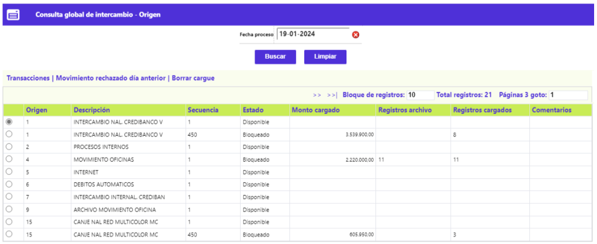
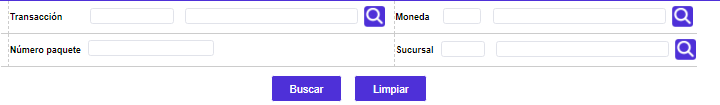

Consulta Global Adquirencia |
Mediante esta opción es posible conocer a manera de síntesis y para cada fecha de proceso, el estado del movimiento por origen del mismo. Cuenta con la opción Transacciones.
 Filtro: El formulario cuenta
con un filtro inicial de búsqueda, necesario para la consulta de la
información:
Filtro: El formulario cuenta
con un filtro inicial de búsqueda, necesario para la consulta de la
información:

Fecha proceso |
Despliega la fecha del sistema en que fue procesado el movimiento. Si se requiere consultar movimiento de fecha anterior basta con utilizar el filtro e ingresar la fecha deseada. |
Transacciones: A través de este botón el sistema muestra un nuevo formulario con las siguientes opciones en la parte superior: Tapa contable, Rechazo cargue, Pendientes, Depósitos, Intercambioasi mismo cuenta con un boton para regresar a la opción anterior.
A través de estas opciones se presenta de manera detallada la desagregación del conjunto de transacciones, las que por efecto de las validaciones toman diferente fin; Exceptuando la Tapa contable, estas opciones sólo se muestran cuando existen transacciones dentro del movimiento, y permiten desplegar formularios adicionales que contienen información detallada de cada una de ellas.
 Filtro: El formulario
cuenta con un filtro inicial de búsqueda, necesario para la consulta
de la información:
Filtro: El formulario
cuenta con un filtro inicial de búsqueda, necesario para la consulta
de la información:

Transacción |
Campo en el cual se ingresa el código de la transacción de maximo 6 posiciones, el sistema despliega la transacción origen y el nombre asociado, este campo contiene lista de valores. El formulario despliega la misma clase de transacción por cuantos paquetes la contengan en una misma fecha de proceso y origen de transacciones. |
Moneda |
Contiene el código y nombre de la moneda en que se denomina el movimiento consultado, campo con lista de valores. |
Número paquete |
Se ingresa el número del paquete que identifica el movimiento por clase o tipo de transacción, lo que facilita su ubicación en caso de ser necesario. |
Sucursal |
Se ingresa el código que identifica la oficina por medio de la que ingresó el movimiento, campo con lista de valores. |
Detalle: Si el usuario invoca la opción Detalle se despliega el siguiente formulario:
 Localización: Adicionalmente, cuenta con un globo de localización que muestra los siguientes campos:
Localización: Adicionalmente, cuenta con un globo de localización que muestra los siguientes campos:

Tapa contable | Rechazo cargue | Pendientes
Depósitos | Intercambio |